Lab 1: Review of Scientific Computing in Python#
This lab is adapted from AM207 (Harvard). Data files are in the book’s data/ folder.
In this lab
What Is Data?
Exploring Data: Data Visualization
Computational Tools
What is Data?#
Where Does Data Come From?#
Internal sources: already collected by or is part of the overall data collection of you organization.
Existing External Sources: available in ready to read format from an outside source for free or for a fee.
External Sources Requiring Collection Efforts: available from external source but acquisition requires special processing.
What Does Data Look Like?#
Simple or atomic data:
Numeric: integers, floats
Boolean: binary or true false values
Strings: sequence of symbols
What Does Data Look Like?#
Compound, composed of a bunch of atomic types:
Date and time: compound value with a specific structure
Lists: a list is a sequence of values
Dictionaries: collections of key-value pairs, a pair of values
x : y, where x is usually a string called key representing the “name” of the value, and y is a value of any type.Example: Student record
First: Weiwei
Last: Pan
Nationality: USA
How is your data represented and stored?#
Data formats:
Tabular Data: a dataset that is a two-dimensional table, where each row typically represents a single data record, and each column represents one type of measurement (csv, xlsx etc.).
Structured Data: each data record is presented in a form of a, possibly complex and multi-tiered, dictionary (json, xml etc.)
Semistructured Data: not all records are represented by the same set of keys or some data records are not represented using the key-value pair structure.
Tabular Data#
In tabular data, each row or observation represents a set of measurements of a single object or event.
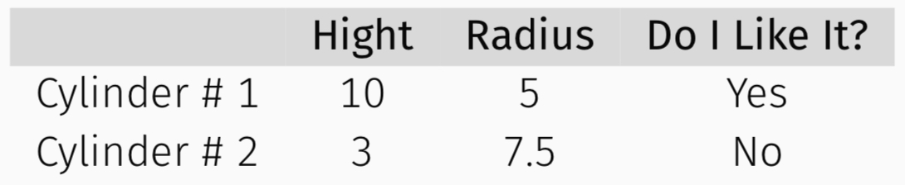
Each type of measurement is an attribute of the data. The number of attributes is the dimension of the data.
Types of Attributes in Tabular Data#
It’s vital to distinguish between classes of attributes based on the type of values they take on.
Quantitative attribute: a real valued number whose values can be ordered.
Example: Height is a quantitative attribute
Categorical attribute: a real valued or string with no inherent order among the values.
Example: “What kind of pet you have” is a categorical attribute
Is the data any good?#
Missing values: how do we fill in?
Wrong values: how can we detect and correct?
Messy format: how can we convert structured or semistructured data into tabular data?
Not usable: what if the data cannot answer the question posed?
Exploring the Data: Data Visualization#
Why Data Visualization?#
If I tell you that the average score for the final examis: 7.64/15.
What does that suggest?
Why Data Visualization?#
If I then show you the following graph, what does it suggest?

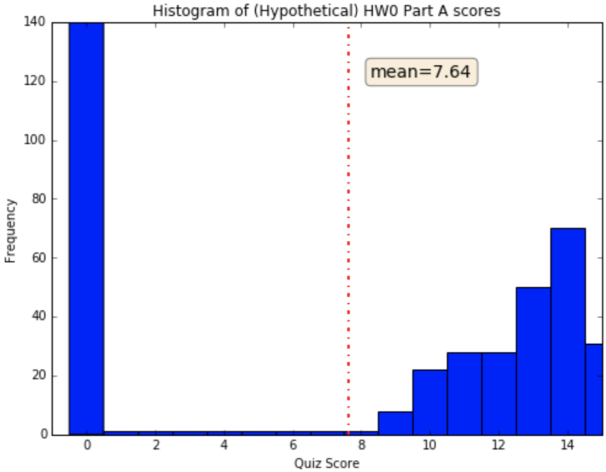
What is Data Visualization Good For?#
Analyze:
Identify hidden patterns and trends
Help formulate/test hypothese
Help determine the next step in analysis/modeling
What is Data Visualization Good For?#
Communicate:
Present information and ideas succinctly
Provide evidence and support
Influence and persuade
Types of Data Visualization#
What do you want your visualization to show about your data?
Distribution: how a variable or variables in the dataset distribute over a range of possible values.
Relationship: how the values of multiple variables in the dataset relate
Composition: how the dataset breaks down into subgroups
Comparison: how trends in multiple variable or datasets compare
Visualizing Distributions#
A histogram is a way to visualize how a quantitative attribute is distributed across certain values.

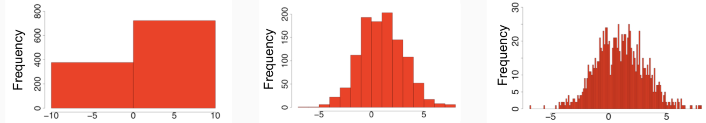
Note: Trends in histograms are sensitive to number of bins.
Visualizing Distributions#
A bar chart is a way to visualize how a categorical attribute is distributed across certain values.

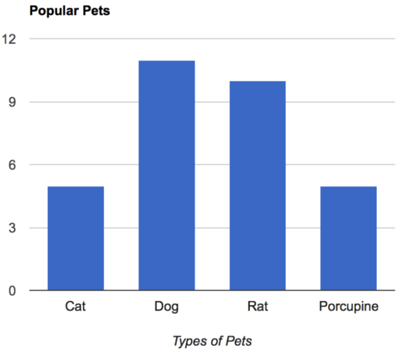
Visualizing Relationships#
A scatter plot is a way to visualize the relationship between two different attributes.

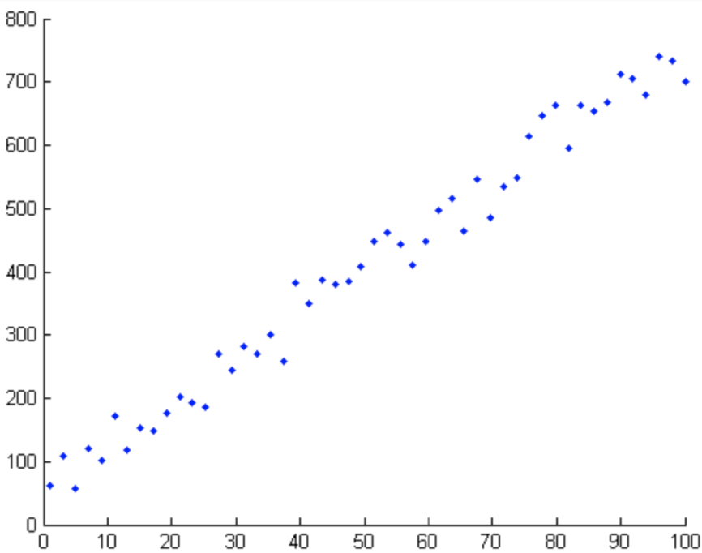
Visualizing Comparisons of Subgroups#
Plotting multiple histograms or curves on the same axes is a way to visualize how different subgroups of data compare.
For example: the following are the blood-glucose distributions of three subgroups within the dataset.

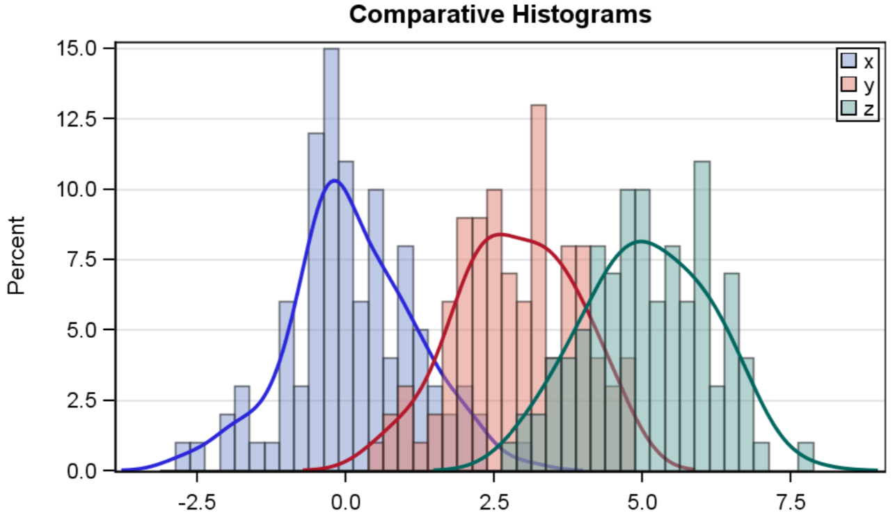
Generating Hypothese#
We can see that birth weight is positively correlated with femur length.

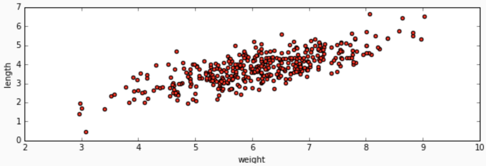
Can we describe exactly how they are correlated?
Generating Hypothese#
We can see that types of iris seem to be distinguished by petal and sepal lengths.

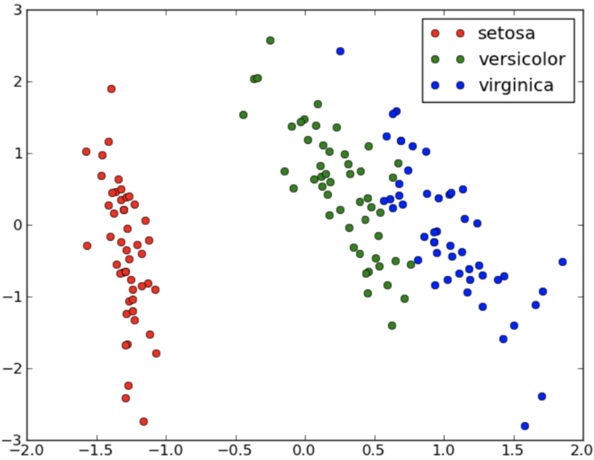
Can we predict the type of iris given petal and sepal lengths?
Computational Tools#
Tools for the Course#
In all computation in this course, we will be using python, for which there are many robust and well documented libraries for machine learning and data science.
Specifically, we will use
0. Jupyter notebook - a web-based interactive development environment for Jupyter notebooks, code, and data.
colab notebook- a Google web app for creating interactive document containing text, equations, live code and outputs.pandas- apythonlibrary for reading and manipulating datamatplotlib- apythonlibrary for data visualizationnumpy- apythonlibrary for manipulating numeric datascikit-learn- apythonlibrary with many machine learning modelskeras- apythonlibrary for deep learningautograd- apythonlibrary for automatic differentiationpymc3- a python library for performing sampling based inference on models
Jupyter or colab Notebooks#
What Does Colab Notebook Look Like?#
Go to https://colab.research.google.com/

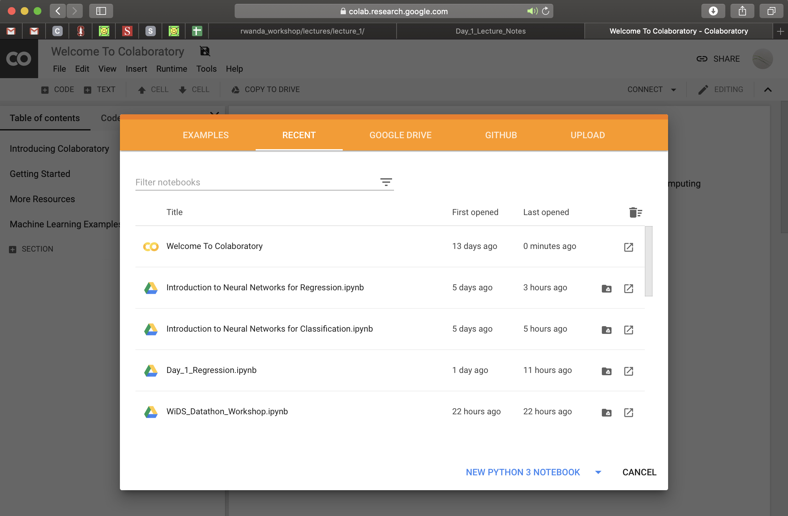
What Does Colab Notebook Look Like?#
Each notebook consists of blocks of cells. Each cell can be of two types: (1) rich text (Markdown) cells or (2) code cells.

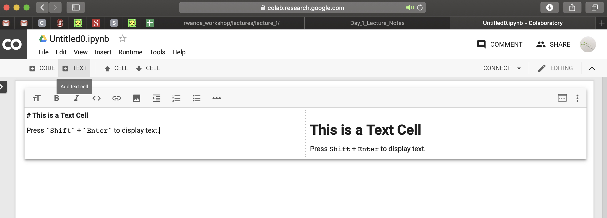
What Does Colab Notebook Look Like?#
Code is executed by an “computational engine” called the kernel (IPython). The output of the code is displayed directly below..

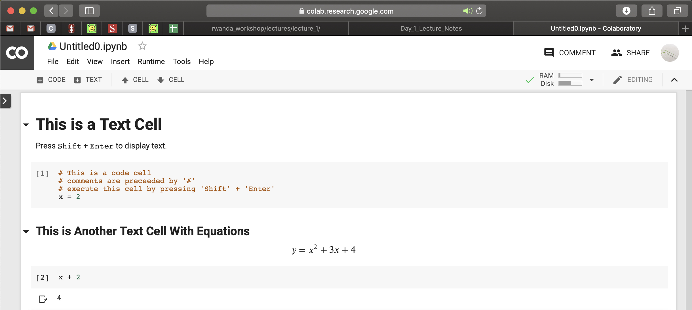
What Does Colab Notebook Look Like?#
Each cell can be executed independently, but once a block of code is executed, it lives in the memory of the kernel.

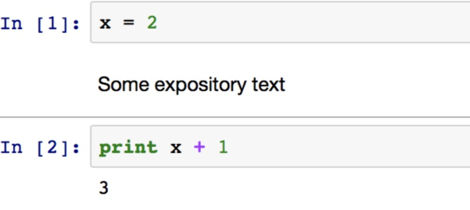
Learning python#
The course website contains readings, cheatsheets and tutorials for mastering general python programming as well as using python libraries for data manipulation/visualization.
Tips for learning a programmming language:
Don’t read code line by line (at first)
Copy as much as possible (learn patterns and templates)
Don’t be afriad to play (trial and error)
Read documentation!
pandas: Reading and Manipulating Data#
pandas#
pandas provides ways of storing tabular data along with labels on the rows and columns.
To use any python library, we must include the line
import pandas as pd
After which we may use any function or object in this library using for example, pd.Series().
pandas Series#
The pandas Series object stores a 1D array of data with an index object (labels).

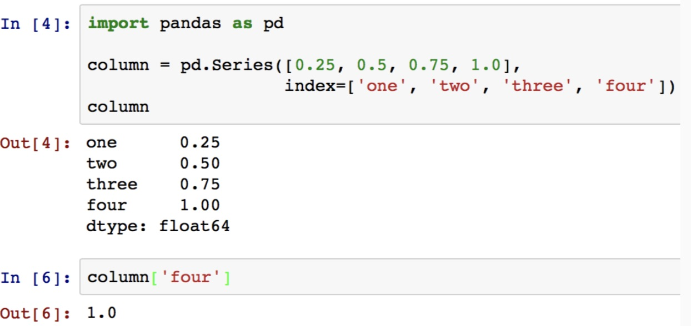
pandas Series#
Each pandas series has a .values and an .index attribute.

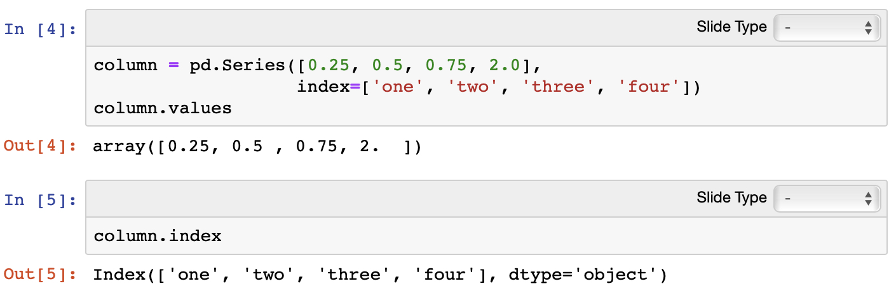
pandas DataFrames#
The pandas DataFrame object stores a 2D table of data with column and row index object (labels).

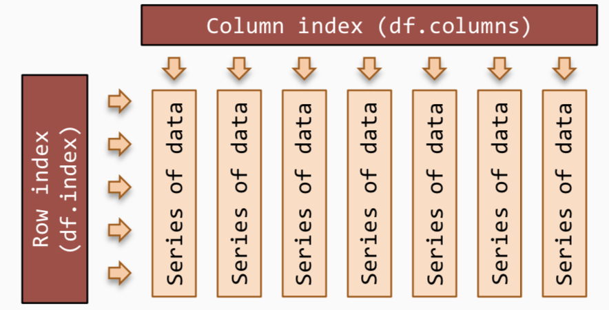
Each column in the data frame is a series.
Reading Data with pandas#
We can import tabular data in a csv file into a data frame:

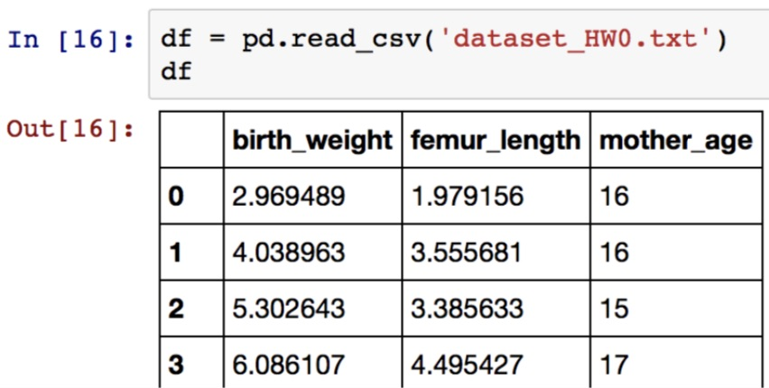
Basic Data Exploration with pandas#
We should start by checking how large is the data.
We do this by checking the shape of the DataFrame.

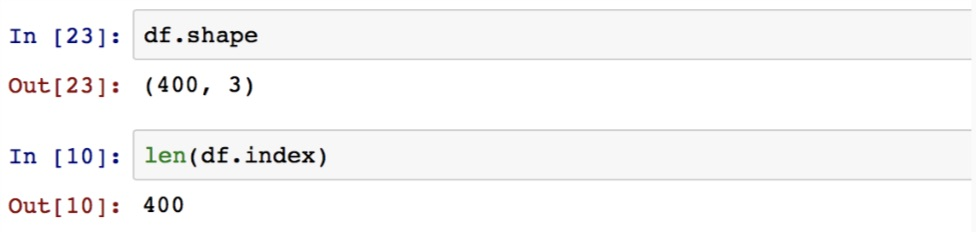
Basic Data Exploration with pandas#
We should start by getting a rough sense of what’s in the data.

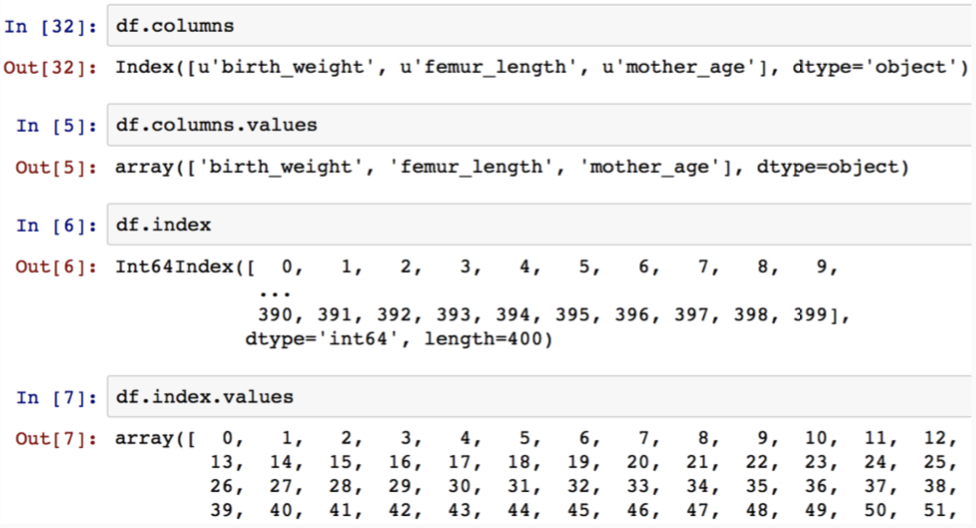
Basic Data Exploration with pandas#
The .head() function returns the first N rows of your data frame!

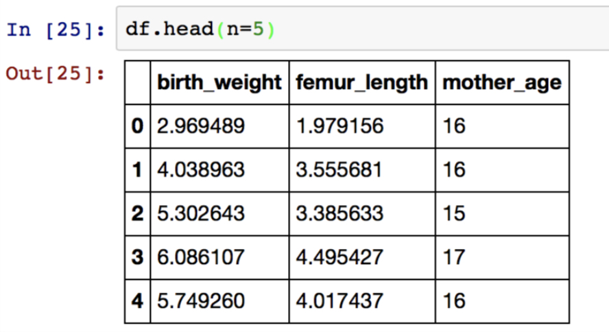
Basic Data Exploration with pandas#
The .describe() function returns the descriptive stats for each numeric column as a data frame object!

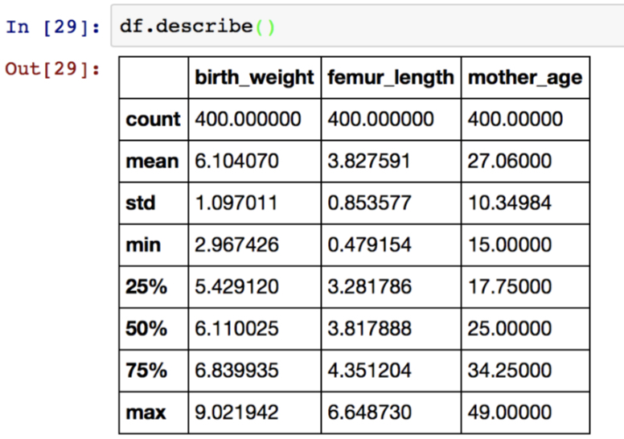
Basic Data Manipulation with pandas#
Accessing a column by label:

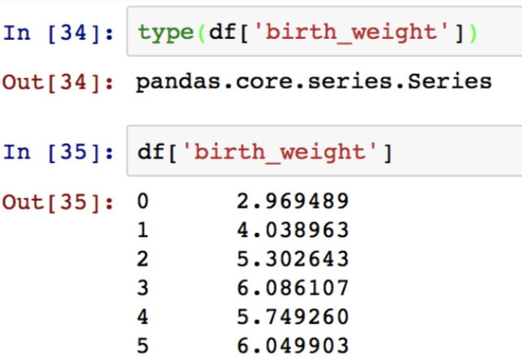
Basic Data Manipulation with pandas#
Accessing columns by criteria (filtering):

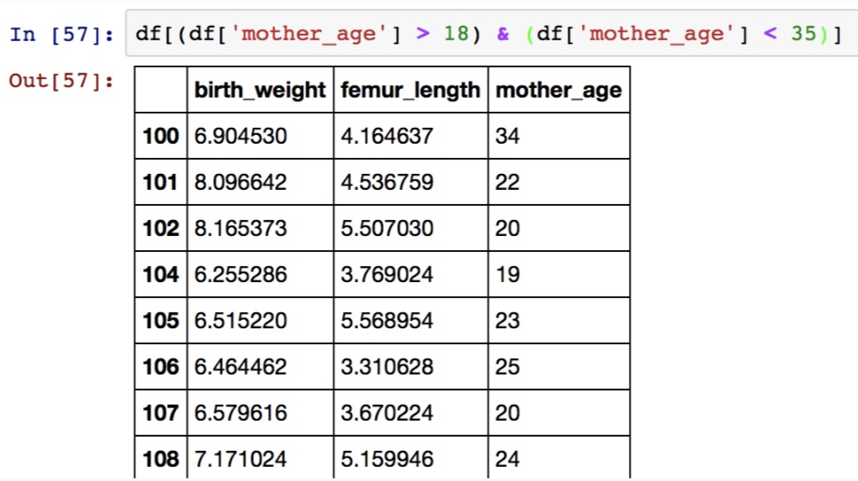
numpy: Numerical Computation#
numpy Arrays#
numpy is a package for scientific computation.
Notably, it provides an multi-dimensional array object which optimizes storing and manipulating data.
Each array has a shape, recorded as a tuple (n, m, ...).

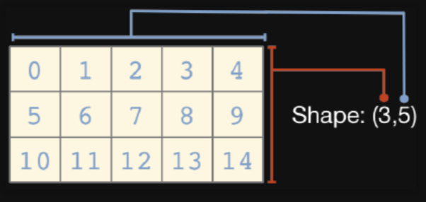
1D Arrays#
Creating 1D arrays:
import numpy as np
my_array = np.array([1, 2, 3, 4])
my_array.shape
(4,)
Computing summary statistic for 1D arrays:
print('mean: {}, std: {}'.format(my_array.mean(), my_array.std()))
mean: 2.5, std: 1.118033988749895
2D Arrays#
Creating 2D arrays:
my_array = np.array([[1, 2], [3, 4]])
my_array
array([[1, 2],
[3, 4]])
my_array.shape
(2, 2)
Indexing 2D Arrays#
The element at the n-th row and the m-th column is indexed as [n, m]. Just like lists, you can also get multiple array values at a time:

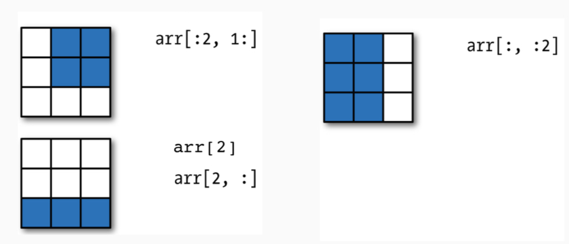
Filtering Arrays#
You can get values from an array that satisfy a bunch of criteria!
my_array == 1
array([[ True, False],
[False, False]])
my_array[(my_array == 1) | (my_array == 2)]
array([1, 2])
The numpy.linalg Module#
The numpy linear algebra functions provide implementation standard linear algebra algorithms:
A = np.diag([5, 6])
B = np.ones((2, 2)) + A
print(np.linalg.inv(A.dot(B)))
[[ 0.03414634 -0.00406504]
[-0.00487805 0.02439024]]
The numpy.random Module#
The functions in random simulate sample from different statistical distributions:
sample = np.random.normal(0, 1, size=1)
sample
array([1.36111975])
sample = np.random.multivariate_normal([0, 0], np.eye(2), size=1)
sample
array([[0.96233174, 0.57055047]])
matplotlib: Visualization#
Data Visualiztaion with matplotlib#
matplotlib is a plotting library, the pyplot module contains a set of functions especially useful for generating a wide range of visualizations:
import matplotlib.pyplot as plt
%matplotlib inline
samples = np.random.multivariate_normal([0, 0], np.eye(2), size=1000)
fig, ax = plt.subplots(1, 1, figsize=(10, 5 ))
ax.scatter(samples[:, 0], samples[:, 1], color='orange', alpha=0.4)
plt.show()
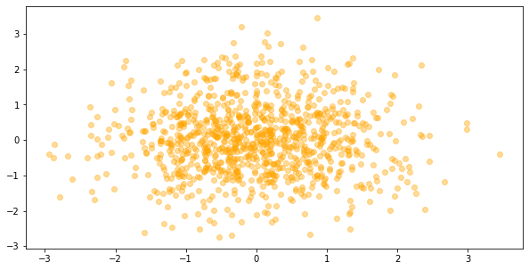
Common Types of Visualizations#

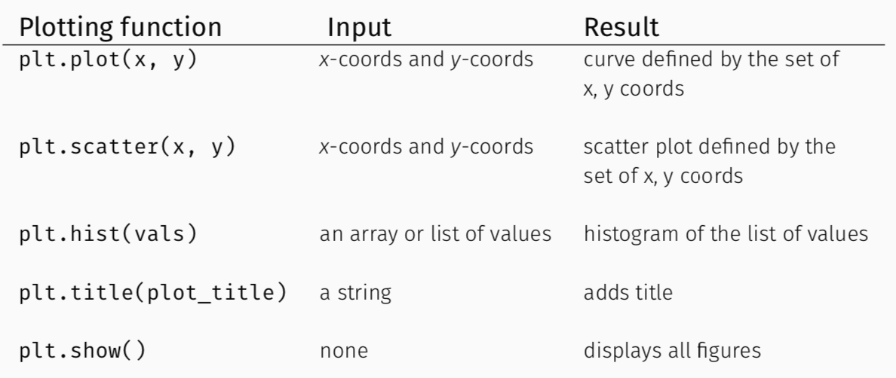
Exercise: Simulation of Statistical Models#
Model of USPS Package Processing Time#
In this problem we want to model how much time it takes an USPS package processing system to process packages that arrive in a day.
Assumptions:
packages arrive randomly in any given hour according to a Poisson distribution. That is, the number of packages \(N\) is distributed as \(Poi(\lambda)\), with \(\lambda = 3\).
each package has a randomn size \(S\) (measured in \(in^3\)) and weight \(W\) (measured in pounds) jointly distributed as \(\mathcal{N}\left([120, 4], \left[\begin{array}{cc} 1.5& 1\\ 1 & 1.5 \end{array} \right] \right)\).
processing time \(T\) (in seconds) for each package is given by \(T = 60 + 0.6 W + 0.2 S + \epsilon\), \(\epsilon \sim \mathcal{N}(0, 5)\).
Tasks:
Compute the expected total weight and size of packages that arrive over a single day. Compute the expected average weight and size of packages that arrive over a single day.
Compute the expected number of packages that arrives in a single day.
Compute the expected processing time of a single package.
Compute the expected processing time of all packages over a single day.